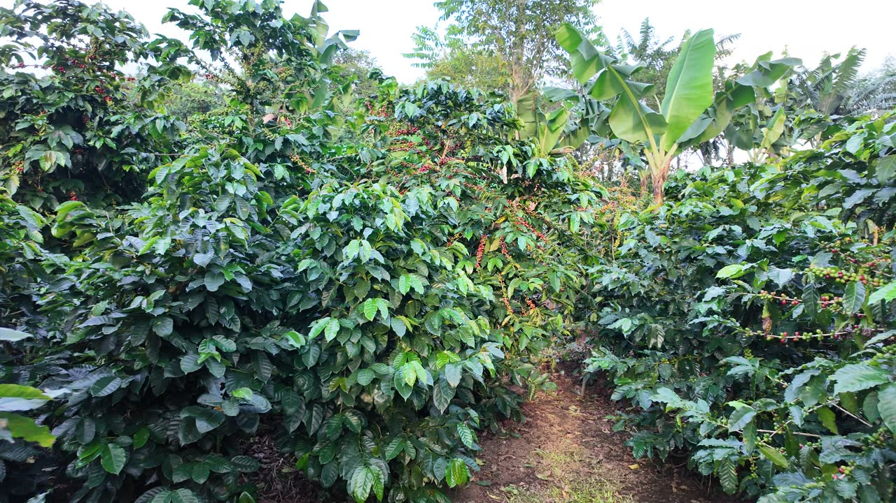
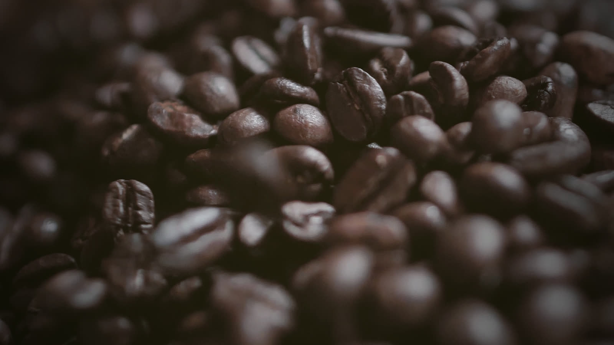
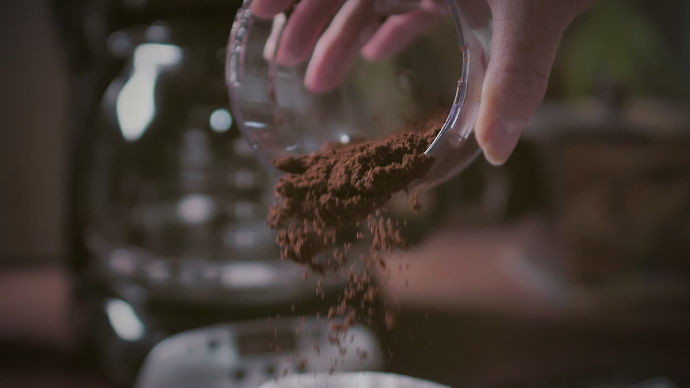
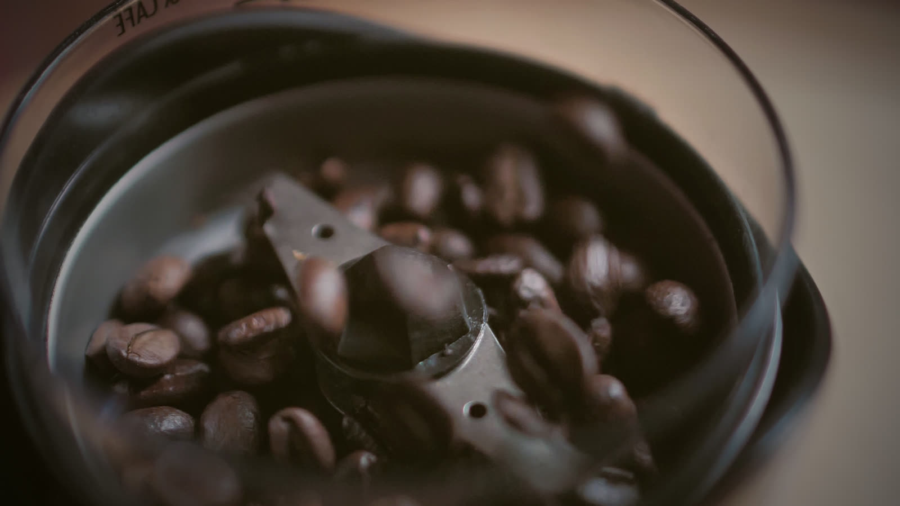

iii.
Da fazendapara a sua xícara.
Qualidade não é uma etapa a mais: é o cuidado em todas. Do pé ao pacote, cada fase existe para preservar o que o café trouxe da fazenda.
- i

Colheita
O fruto é colhido maduro, quando a casca fica vermelha ou amarela. É nesse ponto que o açúcar dentro dele está mais desenvolvido.
- ii

Seleção
Frutos verdes, secos demais ou com defeito ficam para trás. Segue adiante só o que pode virar café especial.
- iii

Processo
Aqui os dois cafés se separam. O Natural seca com o fruto inteiro. O Cereja Descascado tem a casca retirada antes de secar.
- iv

Secagem e descanso
Os grãos secam devagar até a umidade certa e descansam antes da torra, para o sabor se assentar.
- v

Torra em pequenos lotes
Lotes pequenos deixam acompanhar cada torra de perto, até o ponto em que chocolate e caramelo aparecem.